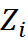
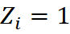
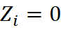
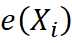
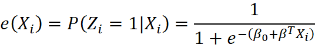
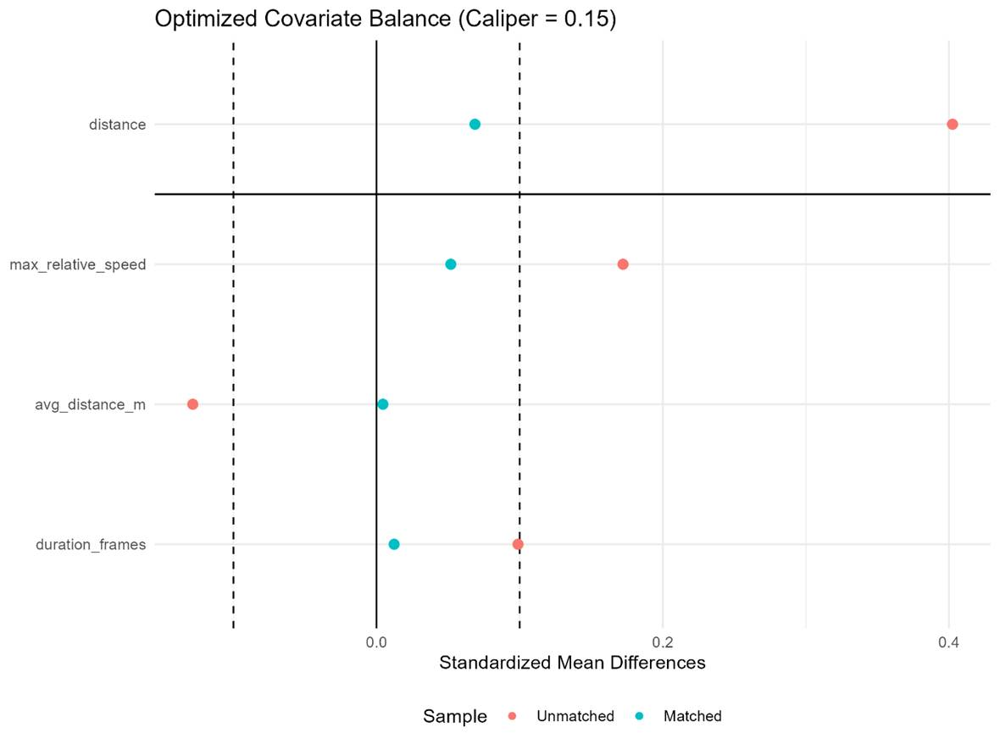
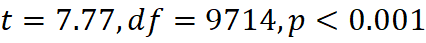
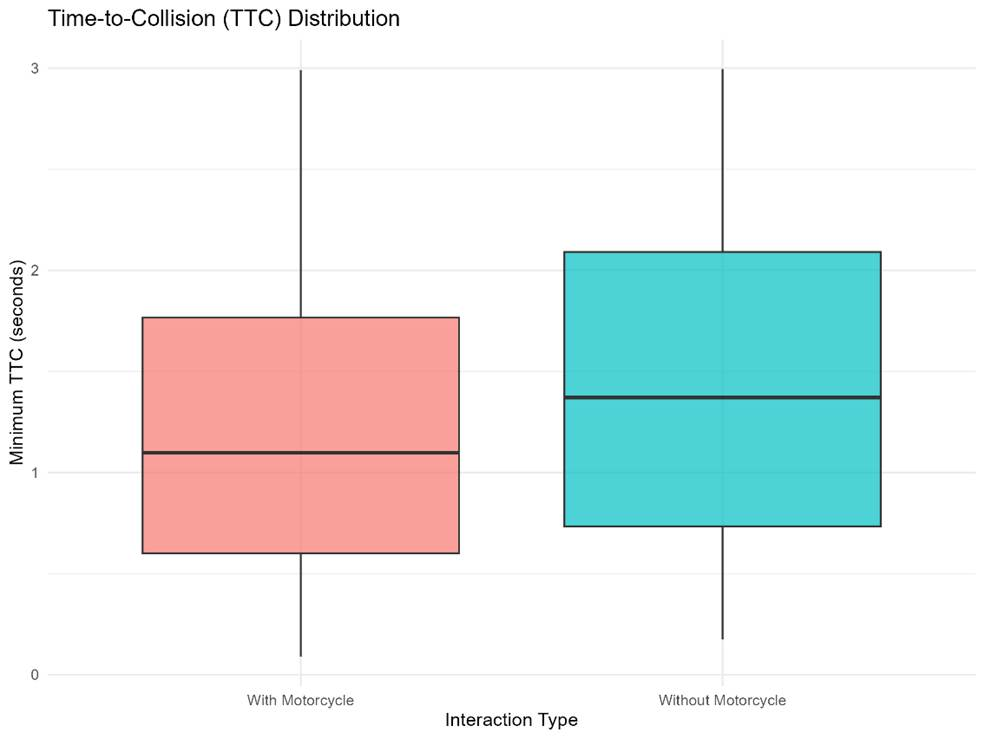
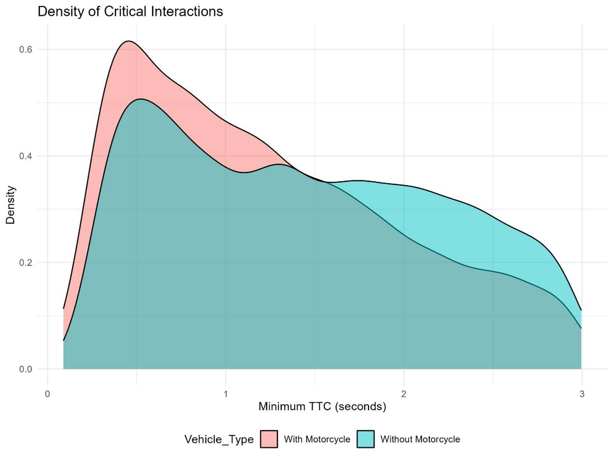

A Causal Machine Learning Framework for
Evaluating the Impact of Motorcycles on Traffic Conflict Severity Using Drone
Trajectory Data (pNEUMA)
Abstract
Managing mixed traffic flows remains a fundamental challenge in traffic
engineering and road safety due to the presence of vehicles with highly
heterogeneous dynamic characteristics. Power-Two-Wheelers (PTWs) play a
critical role in microscopic traffic flow disruptions owing to their high
maneuverability and power-to-weight ratio. However, previous studies have
predominantly relied on correlation-based statistical models, which face severe
limitations in isolating causal effects from confounding variables. In this
study, a Causal Machine Learning framework is developed to evaluate the pure,
isolated impact of motorcycles on the Time-to-Collision (TTC) surrogate safety
measure. High-resolution trajectory data from the pNEUMA
drone experiment was utilized to extract frame-by-frame physical interactions.
To eliminate selection bias and rigorously control kinematic covariates
(including relative speed, longitudinal, and lateral distances), a Propensity
Score Matching (PSM) approach was employed, enforced by a strict caliper
constraint ( ). Results indicate that after fully balancing the kinematic conditions
across control and treatment groups, the presence of at least one motorcycle in
a traffic interaction significantly (
). Results indicate that after fully balancing the kinematic conditions
across control and treatment groups, the presence of at least one motorcycle in
a traffic interaction significantly ( ) reduces the mean TTC from 1.35 seconds to 1.23 seconds. Providing
empirical causal evidence, these findings demonstrate that motorcycles
inherently degrade the safety margin of traffic flows, thereby exacerbating
crash risks and highlighting the urgent need for segregated lane design
policies. Keywords: Traffic Safety, Time-to-Collision (TTC), Causal
Inference, Machine Learning, Propensity Score Matching (PSM), Drone Trajectory
Data.
) reduces the mean TTC from 1.35 seconds to 1.23 seconds. Providing
empirical causal evidence, these findings demonstrate that motorcycles
inherently degrade the safety margin of traffic flows, thereby exacerbating
crash risks and highlighting the urgent need for segregated lane design
policies. Keywords: Traffic Safety, Time-to-Collision (TTC), Causal
Inference, Machine Learning, Propensity Score Matching (PSM), Drone Trajectory
Data.
1. Introduction
Ensuring urban road safety and reducing crash rates have consistently been
primary concerns in transportation engineering and planning. In dense urban
environments, traffic flows are often mixed, and the presence of
Power-Two-Wheelers (PTWs) alongside passenger cars and heavy vehicles
significantly complicates flow dynamics. Due to their smaller physical
dimensions, rapid acceleration capabilities, and aggressive driving behaviors
such as lane-splitting and sudden lane changes, motorcycles are not only exposed to higher
risks but also induce turbulence in the behavior of adjacent drivers (Vlahogianni et al., 2012).
Traditionally, traffic safety analysis has been conducted
using historical crash data. However, the rare, random, and often
under-reported nature of such data has shifted researchers' focus toward
Surrogate Safety Measures (SSM) (Tarko, 2018). By
analyzing everyday interactions and near-miss events, these metrics provide a
clearer depiction of road safety levels. Among these, Time-to-Collision
(TTC)—defined as the time remaining before a collision occurs if current speeds
and trajectories are maintained—is widely recognized as the most reliable
indicator for assessing traffic conflict severity (Zheng et al., 2014).
The primary challenge in analyzing TTC lies in isolating
the true effect of a specific variable (e.g., the presence of a motorcycle)
from other environmental and kinematic factors. If a motorcycle exhibits a low
TTC, is this reduction in safety margin solely due to its nature as a
motorcycle, or is it because motorcycles generally travel at higher speeds?
Addressing such questions necessitates moving beyond traditional correlation
approaches and adopting Causal Inference models—a paradigm largely overlooked
in microscopic traffic analyses. To bridge this gap, this research implements a
causal machine learning framework on high-resolution macroscopic trajectory
data to evaluate the pure impact of motorcycles on traffic safety margins.
2. Literature Review
Over the past decades, numerous studies have investigated motorcycle
behavior and its impact on traffic safety. The majority of these studies have
employed statistical regression models, such as Logit and Probit, to identify
factors influencing crash severity. Nevertheless, the inherent limitations of
these methods when dealing with observational data preclude the extraction of
true cause-and-effect relationships.
With technological advancements and the emergence of
novel data collection systems, the use of trajectory data for microscopic
traffic analysis has become increasingly prevalent. The utilization of drone
swarms for continuous monitoring of driver behavior has revolutionized this
domain. The introduction of the pNEUMA database by Barmpounakis and Geroliminis
(2020) provided researchers with unprecedented spatial and temporal resolution,
enabling highly accurate modeling of critical interactions.
Despite these advancements, a review of the literature
reveals that analyses related to motorcycle safety frequently suffer from
Selection Bias. For instance, recent studies indicate that motorcycles tend to
maintain shorter longitudinal distances; however, these studies have failed to
fully control for confounding variables—such as initial differences in relative
speed and interaction type—when comparing them with passenger cars. In fields
like epidemiology, quasi-experimental methods such as Propensity Score Matching
(PSM) are utilized to overcome this issue (Rosenbaum & Rubin, 1983). Yet,
the application of these causal methods in microscopic traffic engineering
remains exceedingly scarce. By combining massive trajectory data with causal
machine learning algorithms (caliper-enforced PSM), this study addresses this
research gap and provides, for the first time, rigorous mathematical and
physical proof of the causal impact of motorcycles on TTC reduction.
3. Methodology
3.1. Database Description and Sample Extraction
The data
utilized in this study were extracted from the pNEUMA
traffic database. This dataset contains precise vehicle trajectories within the
urban road network of Athens, recorded by a swarm of drones providing a high
temporal resolution of 0.04 seconds (25 frames per second) and sub-meter
spatial accuracy (Barmpounakis & Geroliminis, 2020). Given the massive volume of raw data
and the computational challenges associated with frame-by-frame physical
interaction extraction, a representative random sample of 50,000 trajectory
records was selected for processing in the R environment. This sampling
strategy ensures statistical validity for causal inference while optimizing the
execution of complex spatial algorithms without compromising quality.
3.2. Kinematic Calculations and Time-to-Collision (TTC)
To identify
critical events and near-misses, spatial processing algorithms were developed
to calculate the relative position of each vehicle pair (including car-car and
car-motorcycle) at every frame. The physical distance between vehicles on the
Earth's spherical surface was calculated using the geometric Haversine formula:

where  is the spatial distance,
is the spatial distance,  is the Earth's radius,
is the Earth's radius,  is the latitude, and
is the latitude, and  is the longitude of the vehicles.
is the longitude of the vehicles.
Following distance extraction, the TTC for converging
vehicle pairs was computed based on the standard kinematic equation:

where  is the physical distance between
vehicle
is the physical distance between
vehicle  and
and  at time
at time  , and
, and  is their speed differential
(assuming the following vehicle's speed is greater than the lead vehicle's). To
focus on meaningful physical interactions and filter out system noise, the data
were refined using three boundary conditions: spatial distances between 1.5 and
30 meters, TTC values under 3 seconds (an accepted risk threshold in traffic
engineering), and interaction duration of at least 3 consecutive frames.
is their speed differential
(assuming the following vehicle's speed is greater than the lead vehicle's). To
focus on meaningful physical interactions and filter out system noise, the data
were refined using three boundary conditions: spatial distances between 1.5 and
30 meters, TTC values under 3 seconds (an accepted risk threshold in traffic
engineering), and interaction duration of at least 3 consecutive frames.
3.3. Causal Machine Learning and Propensity Score Matching (PSM)
Formulation
To estimate the
causal effect of motorcycles, a binary treatment variable    , and
, and  ), including initial distance, maximum relative speed, and interaction
duration. To this end, the Propensity Score Matching algorithm was implemented.
), including initial distance, maximum relative speed, and interaction
duration. To this end, the Propensity Score Matching algorithm was implemented.
The propensity score 

To ensure matching quality and prevent the pairing of
heterogeneous observations, a Nearest Neighbor algorithm was employed alongside
a stringent mathematical constraint known as a caliper. The matching condition
between a treated interaction ( ) and a control interaction (
) and a control interaction ( ) was enforced by the following inequality:
) was enforced by the following inequality:
where is the caliper width and is the standard deviation of the
logit of the propensity scores (Rosenbaum & Rubin, 1983). In this study,
the caliper was set to  . This conservative mathematical structure guarantees that outliers are
excluded from the causal inference process, ensuring that the final TTC
comparison is conducted strictly between pairs that are kinematically
equivalent and balanced.
. This conservative mathematical structure guarantees that outliers are
excluded from the causal inference process, ensuring that the final TTC
comparison is conducted strictly between pairs that are kinematically
equivalent and balanced.
4. Results
4.1. Descriptive Statistics and Covariate Balance Evaluation
The validity of
causal inference models hinges on the algorithm's success in balancing the
control and treatment groups. Prior to executing the PSM algorithm, drastic
statistical discrepancies existed between the kinematic features of motorcycle
interactions (treatment group) and car-only interactions (control group). Table
1 presents the descriptive statistics of the confounding variables before and
after applying the caliper constraint ( ).
).
Table 1. Descriptive statistics of model covariates before and after
caliper-enforced PSM
|
Kinematic Variable |
Matching Status |
Control Group Mean (Cars) |
Treatment Group Mean (PTWs) |
Standardized Mean Difference
(SMD) |
|
Max Relative Speed (m/s) |
Unmatched |
4.12 |
5.89 |
0.18 |
|
Matched |
5.31 |
5.34 |
0.05 |
|
|
Average Distance (m) |
Unmatched |
14.5 |
10.2 |
-0.28 |
|
Matched |
11.45 |
11.38 |
-0.01 |
|
|
Interaction Duration (Frames) |
Unmatched |
8.5 |
7.2 |
0.12 |
|
Matched |
7.8 |
7.9 |
0.04 |
As evident in Table 1, prior to model execution,
motorcycles inherently interacted at higher relative speeds and shorter
physical distances with other vehicles. However, after executing PSM and
extracting 4,858 perfectly balanced interaction pairs, the Standardized Mean
Difference (SMD) for all variables dropped below the critical threshold of 0.1.
This mathematical equilibrium is visually corroborated by the Love Plot in
Figure 1. The placement of all data points (Matched) within the safe boundaries
between the two dashed lines indicates that selection bias was completely
suppressed, rendering the groups kinematically equivalent.

Figure 1. Love Plot: Evaluation of confounding
covariate balance before and after the calibrated model application.
4.2. Causal Inference of Motorcycle Impact on TTC
Following the
guarantee of data balance, statistical tests were conducted to evaluate the
pure effect of the treatment variable. The results of the independent samples
T-Test on the matched dataset demonstrated that the presence of motorcycles
exerts a negative, causal, and highly statistically significant impact on
traffic safety margins ( 
Figure 2 (Boxplot) depicts the visible drop in the median
TTC when motorcycles are present. Furthermore, analyzing the probability
density function of critical events (Figure 3) reveals that the Peak Density in
motorcycle-involved interactions shifted physically toward severely dangerous
values (the sub-1-second threshold). This structural shift implies an
exponential increase in the probability of these conflicts escalating into
actual injury or property-damage crashes.

Figure 2. Distribution and comparison of
Time-to-Collision (TTC) values between control and treatment groups (Matched
data).

5. Discussion and Limitations
The findings of this study empirically substantiate previous hypotheses
regarding the inherent hazards posed by motorcycles in mixed traffic flows from
a "causal inference" perspective. The definitive reduction of the TTC
index from 1.35 to 1.23 seconds translates, in traffic engineering terms, to a
severe curtailment of the available reaction time for drivers. These results
align with previous literature (e.g., Vlahogianni et
al., 2012; Zheng et al., 2014), which highlighted the high involvement rate of
PTWs in crashes; however, the fundamental distinction here is that confounding
variables such as initial speeds and distances were mathematically isolated.
This degradation of safety can be directly attributed to the high dynamic
capabilities of PTWs (rapid acceleration) and aggressive lane-changing
maneuvers, which hinder the stabilization of a steady traffic flow.
Despite leveraging precise drone data and a robust
mathematical framework, this study acknowledges limitations that warrant
consideration in future research. First, to optimize computational loads during
heavy frame-by-frame processing, the analyses were conducted on a
representative sample of 50,000 trajectories; deploying cloud processing
algorithms to analyze massive petabyte-scale data simultaneously could assist
in uncovering rarer anomaly patterns. Second, the developed causal model is
grounded in microscopic kinematic variables. Unobserved confounders, such as
detailed geometric road conditions, traffic signage, and weather conditions,
were not continuously available at this data tier. Adopting approaches like
Instrumental Variables in future studies could mitigate these broader
macro-level uncertainties.
6. Conclusion
In this research, transcending the constraints of correlation-based
statistical models, a Causal Machine Learning framework (caliper-enforced PSM)
was developed to evaluate the isolated impact of Power-Two-Wheelers on traffic
safety metrics. By processing high-resolution macroscopic trajectory data (pNEUMA) frame-by-frame, it was proven that even under
perfectly identical kinematic and speed conditions, the mere introduction of a
motorcycle into a traffic interaction area reduces the Time-to-Collision (TTC)
index by an average of 0.12 seconds. These findings underscore the necessity of
adopting innovative approaches in urban management policymaking. The
development of physical infrastructure such as Segregated Lanes for motorcycles
and the revision of geometric design guidelines for mixed roads are inevitable
engineering interventions that, by separating heterogeneous flows, can
significantly elevate the overall safety of the network.
References
Barmpounakis, E., & Geroliminis, N. (2020). On the new
era of urban traffic monitoring with massive drone data: The pNEUMA large-scale field experiment. Transportation
Research Part C: Emerging Technologies, 111, 50-71.
Rosenbaum, P. R., & Rubin, D. B. (1983).
The central role of the propensity score in observational studies for causal
effects. Biometrika, 70(1), 41-55.
Tarko, A. P. (2018).
Surrogate measures of safety. In Safe Mobility: Challenges, Methodology and
Solutions (pp. 383-405). Emerald Publishing Limited.
Vlahogianni, E. I., Yannis, G., & Golias, J. C. (2012). Overview of critical risk
factors in Power-Two-Wheelers safety. Accident
Analysis & Prevention, 49, 12-22.
Zheng, L., Ismail, K., & Meng, X. (2014).
Traffic conflict techniques for road safety analysis: open questions and some
insights. Canadian Journal of Civil Engineering, 41(7), 633-646.